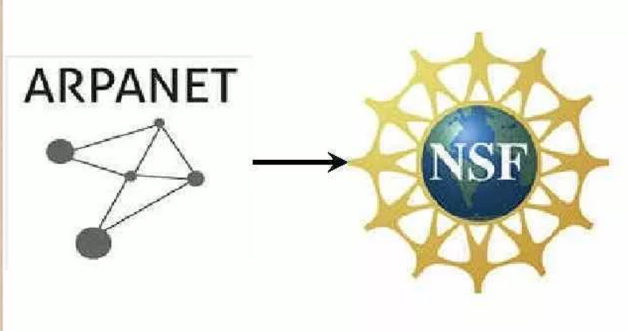

История
| • 1969 год | ||
| По заданию Министерства обороны США были объединены несколько компьютеров оборонных и научно-исследовательских центров. Сеть получила название ARPANET. Эта сеть позволяла университетам США и сотрудникам Министерства обороны поддерживать связь и использовать вычислительные ресурсы на расстоянии. |
| • 1973 год | ||
| К ARPANET были подключены первые иностранные организации из Норвегии и Великобритании. ARPANET становится международной сетью. |
| • 1984 год | ||
| Была разработана система доменных имён (Domain Name System, DNS) - иерархическая система баз данных, предоставляющая пользователям сети сервис по автоматическому преобразованию имён в цифровой IP-адрес компьютера, содержащего искомый ресурс. |
| • 1986 год | ||
| Была создана сеть NSFNET, которая имела гораздо большую пропускную способность, чем ARPANET. За год к NSFNET подключились около 10 тысяч компьютеров. |
| • 1990 год |  | |
| ARPANET прекратила своё существование, полностью проиграв конкуренцию NFSNET. |
| • 1991 год |  |
|
| Начата разработка первой программы web-браузера, которая называлась World Wide Web. В этом же году была опубликована предварительная версия описания протокола HTML. |
| • 1995 год |  |
|
| Служба World Wide Web стала основным поставщиком информации в Интернете |
| Интернет | Основные службы | Структура |